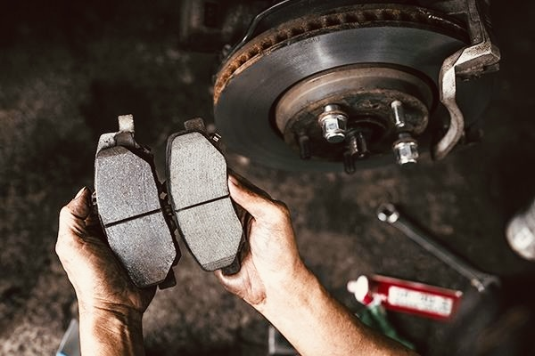
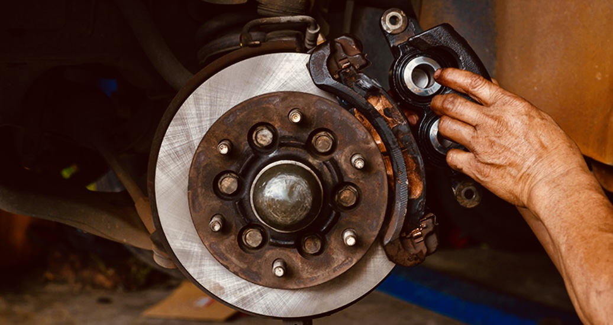

Brake pads are one of the most important safety components of your car. Worn brake pads can reduce your stopping power and put you at risk. Learning how to replace them not only saves money but also helps you stay safe on the road.
Park your car on a flat surface and engage the parking brake. Place wheel chocks behind the tires to prevent any movement while you work.
Before lifting the car, slightly loosen the lug nuts on the wheel you will be working on. Do not remove them yet.
Use a jack to lift the vehicle and secure it with jack stands. Once lifted, remove the lug nuts completely and take off the wheel.

The brake caliper sits over the brake rotor. This is the component that holds the brake pads in place.
Use a wrench or socket to remove the bolts holding the caliper. Carefully slide the caliper off the rotor and support it so it does not hang by the brake line.
Take out the worn brake pads from the caliper bracket. Pay attention to how they are positioned so you can install the new ones correctly.
Insert the new brake pads into the bracket in the same position as the old ones. Make sure they fit securely.
Slide the caliper back over the rotor and new pads. Tighten the bolts securely to hold everything in place.
Put the wheel back on, tighten the lug nuts, and lower the car. Pump the brake pedal a few times before driving to ensure proper brake pressure.